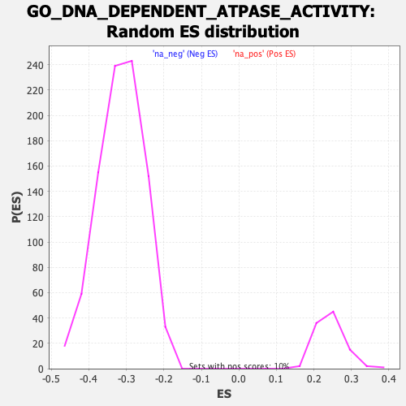

| | | Dataset | DE_genes2 |
| Phenotype | NoPhenotypeAvailable |
| Upregulated in class | na_neg |
| GeneSet | GO_DNA_DEPENDENT_ATPASE_ACTIVITY |
| Enrichment Score (ES) | -0.7019262 |
| Normalized Enrichment Score (NES) | -2.2341082 |
| Nominal p-value | 0.0 |
| FDR q-value | 0.0 |
| FWER p-Value | 0.0 |
Table: GSEA Results Summary
 Fig 1: Enrichment plot: GO_DNA_DEPENDENT_ATPASE_ACTIVITY
Fig 1: Enrichment plot: GO_DNA_DEPENDENT_ATPASE_ACTIVITY
Profile of the Running ES Score & Positions of GeneSet Members on the Rank Ordered List
| PROBE | GENE SYMBOL | GENE_TITLE | RANK IN GENE LIST | RANK METRIC SCORE | RUNNING ES | CORE ENRICHMENT | | 1 | CHTF8 | | | 727 | 3.153 | -0.0356 | No |
| 2 | SMARCAL1 | | | 986 | 2.753 | -0.0437 | No |
| 3 | RECQL5 | | | 1740 | 1.959 | -0.0841 | No |
| 4 | CHD8 | | | 2166 | 1.640 | -0.1055 | No |
| 5 | CHD4 | | | 2451 | 1.464 | -0.1187 | No |
| 6 | IGHMBP2 | | | 2453 | 1.464 | -0.1147 | No |
| 7 | CHD3 | | | 3139 | 1.137 | -0.1533 | No |
| 8 | SMARCA4 | | | 3328 | 1.065 | -0.1618 | No |
| 9 | DDX11 | | | 3360 | 1.054 | -0.1608 | No |
| 10 | RTEL1 | | | 3364 | 1.052 | -0.1581 | No |
| 11 | NAV2 | | | 3391 | 1.042 | -0.1568 | No |
| 12 | ERCC3 | | | 3523 | 0.997 | -0.1620 | No |
| 13 | ERCC2 | | | 4271 | 0.758 | -0.2054 | No |
| 14 | RAD51B | | | 5295 | 0.493 | -0.2663 | No |
| 15 | DQX1 | | | 5422 | 0.465 | -0.2727 | No |
| 16 | XRCC5 | | | 6499 | 0.246 | -0.3375 | No |
| 17 | CHD6 | | | 6569 | 0.230 | -0.3411 | No |
| 18 | SMARCA2 | | | 8758 | -0.145 | -0.4738 | No |
| 19 | XRCC6 | | | 9456 | -0.304 | -0.5154 | No |
| 20 | RUVBL2 | | | 9831 | -0.409 | -0.5371 | No |
| 21 | SMARCA1 | | | 9926 | -0.436 | -0.5416 | No |
| 22 | CHD5 | | | 9979 | -0.455 | -0.5435 | No |
| 23 | ERCC6 | | | 10487 | -0.616 | -0.5727 | No |
| 24 | CHD2 | | | 11469 | -0.996 | -0.6296 | No |
| 25 | DHX9 | | | 11678 | -1.078 | -0.6393 | No |
| 26 | RAD54L2 | | | 12191 | -1.322 | -0.6668 | No |
| 27 | RUVBL1 | | | 12197 | -1.323 | -0.6635 | No |
| 28 | CDK7 | | | 12229 | -1.340 | -0.6617 | No |
| 29 | HELB | | | 12425 | -1.437 | -0.6696 | No |
| 30 | RFC2 | | | 12578 | -1.523 | -0.6747 | No |
| 31 | RAD51D | | | 12611 | -1.538 | -0.6724 | No |
| 32 | XRCC3 | | | 12710 | -1.592 | -0.6740 | No |
| 33 | SUPV3L1 | | | 12981 | -1.755 | -0.6856 | No |
| 34 | RBBP4 | | | 13080 | -1.817 | -0.6865 | No |
| 35 | GTF2F2 | | | 13218 | -1.900 | -0.6896 | No |
| 36 | CHTF18 | | | 13370 | -2.009 | -0.6933 | No |
| 37 | G3BP1 | | | 13474 | -2.084 | -0.6938 | No |
| 38 | GTF2H4 | | | 13553 | -2.134 | -0.6927 | No |
| 39 | CHD7 | | | 13706 | -2.247 | -0.6957 | Yes |
| 40 | MNAT1 | | | 13731 | -2.265 | -0.6910 | Yes |
| 41 | MCM3 | | | 13783 | -2.315 | -0.6877 | Yes |
| 42 | MCM5 | | | 13861 | -2.378 | -0.6858 | Yes |
| 43 | TTF2 | | | 13869 | -2.386 | -0.6797 | Yes |
| 44 | MCM7 | | | 13952 | -2.457 | -0.6779 | Yes |
| 45 | RFC5 | | | 13956 | -2.460 | -0.6713 | Yes |
| 46 | RECQL4 | | | 14062 | -2.561 | -0.6706 | Yes |
| 47 | DMC1 | | | 14196 | -2.689 | -0.6713 | Yes |
| 48 | HELQ | | | 14235 | -2.730 | -0.6661 | Yes |
| 49 | PBRM1 | | | 14475 | -2.959 | -0.6725 | Yes |
| 50 | ASCC3 | | | 14497 | -2.986 | -0.6656 | Yes |
| 51 | GTF2H2 | | | 14529 | -3.022 | -0.6591 | Yes |
| 52 | MSH6 | | | 14863 | -3.443 | -0.6699 | Yes |
| 53 | MCM4 | | | 14906 | -3.510 | -0.6628 | Yes |
| 54 | RAD51C | | | 14925 | -3.543 | -0.6541 | Yes |
| 55 | MSH2 | | | 14972 | -3.606 | -0.6470 | Yes |
| 56 | MCM2 | | | 15006 | -3.658 | -0.6389 | Yes |
| 57 | CCNH | | | 15015 | -3.664 | -0.6293 | Yes |
| 58 | DDX3X | | | 15126 | -3.818 | -0.6255 | Yes |
| 59 | CHD1L | | | 15163 | -3.867 | -0.6171 | Yes |
| 60 | RAD54B | | | 15206 | -3.922 | -0.6088 | Yes |
| 61 | DDX12P | | | 15223 | -3.954 | -0.5989 | Yes |
| 62 | MSH3 | | | 15265 | -4.049 | -0.5902 | Yes |
| 63 | RAD51 | | | 15283 | -4.088 | -0.5800 | Yes |
| 64 | RAD17 | | | 15291 | -4.101 | -0.5691 | Yes |
| 65 | MCM8 | | | 15299 | -4.112 | -0.5582 | Yes |
| 66 | BPTF | | | 15345 | -4.192 | -0.5494 | Yes |
| 67 | CHD9 | | | 15371 | -4.244 | -0.5393 | Yes |
| 68 | SETX | | | 15386 | -4.266 | -0.5284 | Yes |
| 69 | RAD54L | | | 15435 | -4.365 | -0.5193 | Yes |
| 70 | DNA2 | | | 15436 | -4.365 | -0.5072 | Yes |
| 71 | INO80 | | | 15484 | -4.450 | -0.4978 | Yes |
| 72 | GINS1 | | | 15564 | -4.619 | -0.4899 | Yes |
| 73 | GTF2H1 | | | 15594 | -4.686 | -0.4788 | Yes |
| 74 | ATRX | | | 15599 | -4.719 | -0.4660 | Yes |
| 75 | GINS4 | | | 15688 | -4.879 | -0.4579 | Yes |
| 76 | BLM | | | 15728 | -4.957 | -0.4467 | Yes |
| 77 | RFC4 | | | 15807 | -5.149 | -0.4372 | Yes |
| 78 | MCM6 | | | 15829 | -5.218 | -0.4241 | Yes |
| 79 | SMARCA5 | | | 15909 | -5.412 | -0.4140 | Yes |
| 80 | HLTF | | | 15978 | -5.593 | -0.4028 | Yes |
| 81 | PIF1 | | | 16018 | -5.727 | -0.3894 | Yes |
| 82 | RFC3 | | | 16020 | -5.728 | -0.3737 | Yes |
| 83 | NBN | | | 16021 | -5.731 | -0.3579 | Yes |
| 84 | RFC1 | | | 16030 | -5.761 | -0.3425 | Yes |
| 85 | WRN | | | 16074 | -5.884 | -0.3289 | Yes |
| 86 | RECQL | | | 16118 | -5.999 | -0.3150 | Yes |
| 87 | GTF2H3 | | | 16136 | -6.070 | -0.2993 | Yes |
| 88 | ERCC6L | | | 16159 | -6.148 | -0.2837 | Yes |
| 89 | GINS2 | | | 16213 | -6.392 | -0.2693 | Yes |
| 90 | DHX36 | | | 16255 | -6.577 | -0.2537 | Yes |
| 91 | ZRANB3 | | | 16266 | -6.660 | -0.2360 | Yes |
| 92 | CDC45 | | | 16272 | -6.693 | -0.2178 | Yes |
| 93 | SMARCAD1 | | | 16278 | -6.759 | -0.1995 | Yes |
| 94 | DSCC1 | | | 16359 | -7.253 | -0.1844 | Yes |
| 95 | CHD1 | | | 16364 | -7.335 | -0.1645 | Yes |
| 96 | BRIP1 | | | 16369 | -7.368 | -0.1444 | Yes |
| 97 | RAD50 | | | 16404 | -7.792 | -0.1250 | Yes |
| 98 | XRCC2 | | | 16461 | -8.522 | -0.1049 | Yes |
| 99 | TOP2B | | | 16475 | -8.798 | -0.0815 | Yes |
| 100 | POLQ | | | 16490 | -9.648 | -0.0558 | Yes |
| 101 | TOP2A | | | 16497 | -9.873 | -0.0290 | Yes |
| 102 | MCM9 | | | 16513 | -11.241 | 0.0011 | Yes |
Table: GSEA details [plain text format]

Fig 2: GO_DNA_DEPENDENT_ATPASE_ACTIVITY: Random ES distribution
Gene set null distribution of ES for GO_DNA_DEPENDENT_ATPASE_ACTIVITY